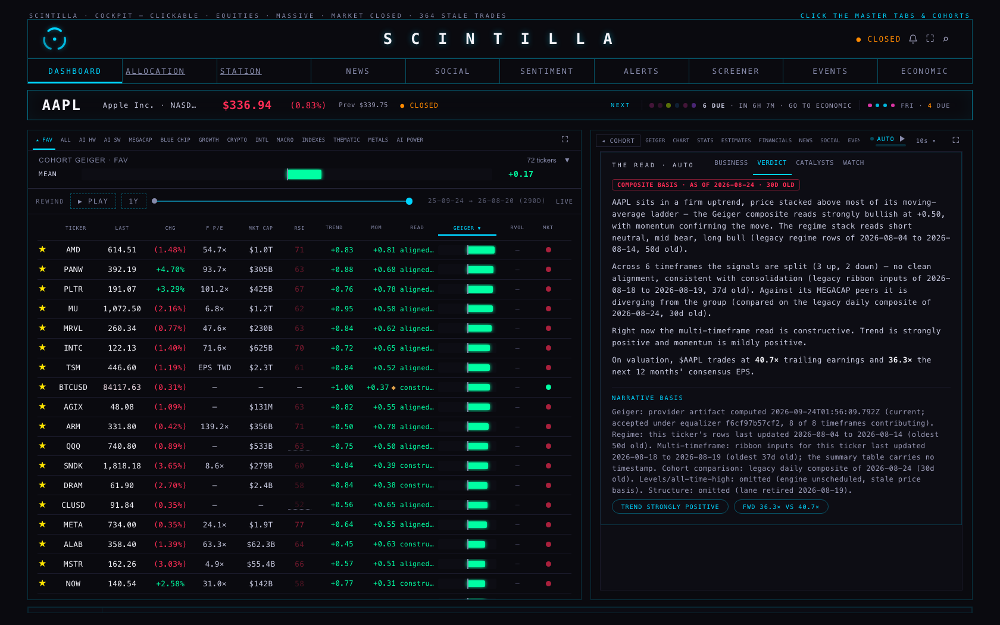
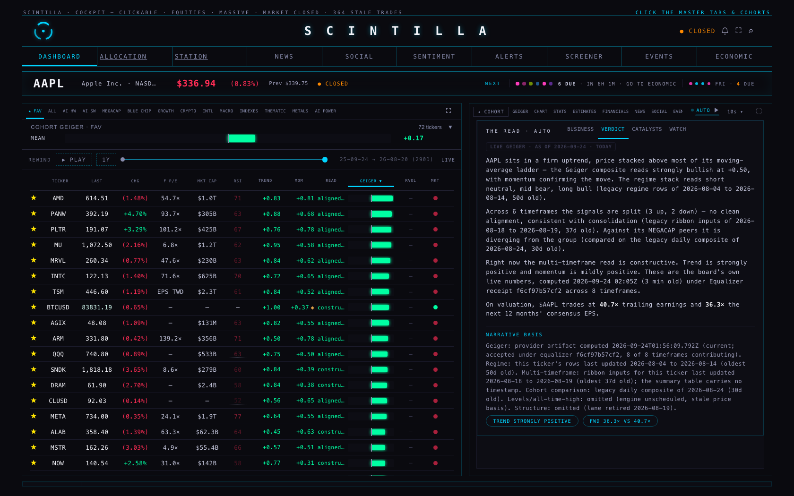
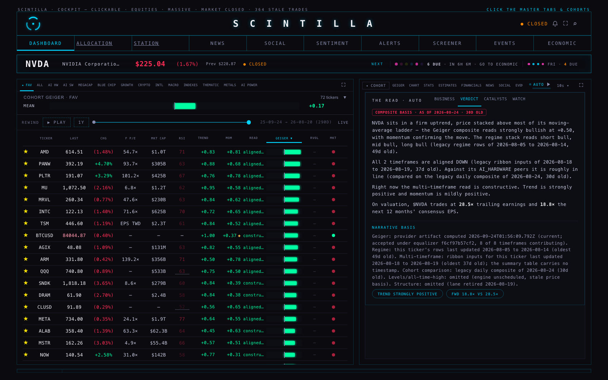
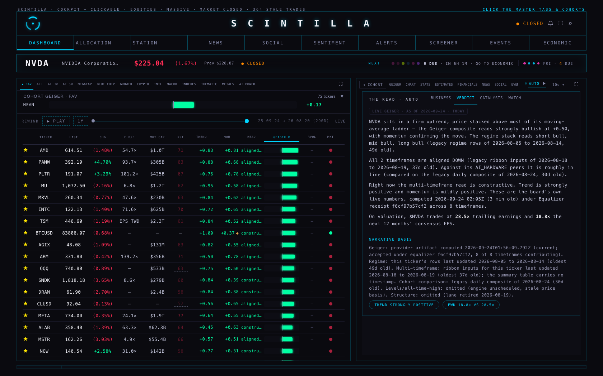
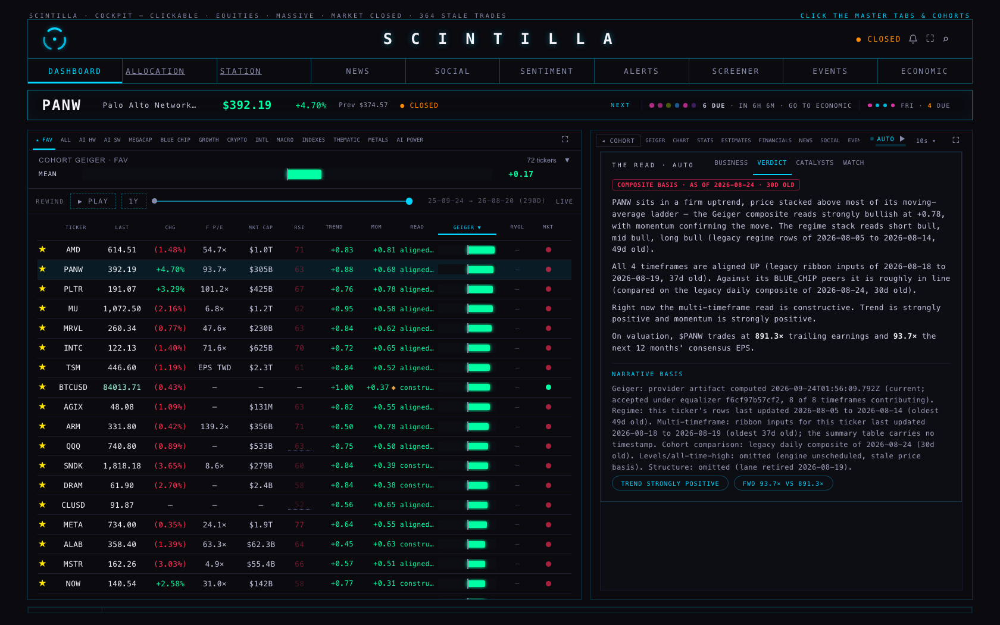
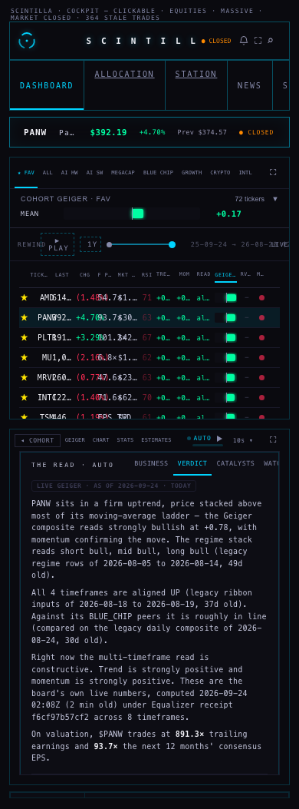
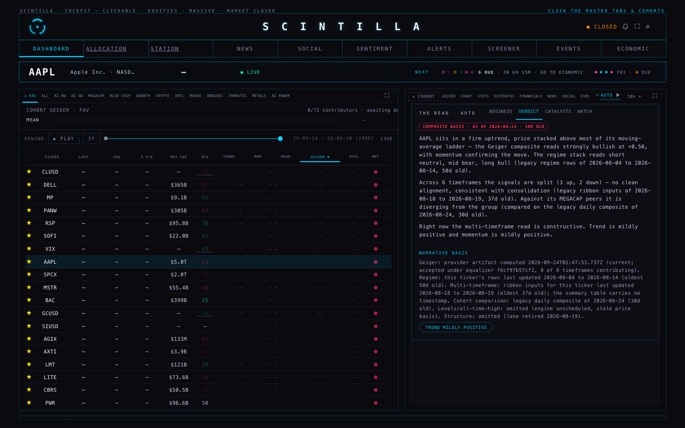
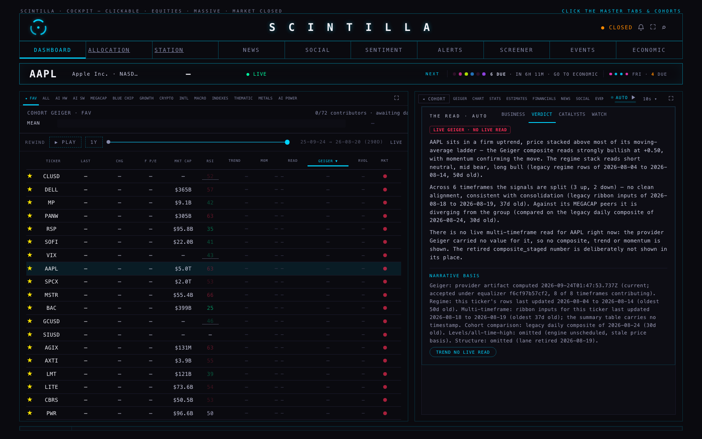

You said the read, the verdict and the business catalyst were stale. The date on each tab was made honest last night. This is the other half: the words and numbers behind the verdict now come from the engine that is actually running, and five companies have fresh business, catalysts and watch notes written from what Scintilla already holds.
There are two different engines that can produce a company's Geiger, trend and momentum.
f6cf97b57cf2.composite_staged. Measured this morning: it holds
386 rows for the daily timeframe, and 364 of them — every equity — have not moved since 24 August. Only 22
rows are current, and those are crypto, futures, rates and the VIX. For AAPL it still says +0.30.The company READ tab was taking its date from the retired table. So the verdict carried a red label reading AS OF 2026-08-24 · 30D OLD while the board beside it showed this morning's reading. Worse, when the live engine had nothing for a company, the page did not say so: an absent number was quietly turned into zero, and zero prints as "the multi-timeframe read is constructive. Trend is mildly positive and momentum is mildly positive." That sentence was not a reading. It was an empty slot wearing the clothes of one.
The code read num(row.composite) || 0. In JavaScript that turns "no value" into
the number 0, and every sentence downstream then describes 0 as if it were a measurement.
The verdict reads the same object the board reads — the row the live overlay has just written — and says which of three things is true:
| STATE | WHAT YOU SEE |
|---|---|
| Live number | The reading, then: "These are the board's own live numbers, computed 2026-09-24 01:28Z (6 min old) under Equalizer receipt f6cf97b57cf2 across 8 timeframes." The label above the words says LIVE GEIGER · AS OF 2026-09-24 · TODAY. |
| No live number | "There is no live multi-timeframe read for PANW right now… the retired composite_staged number is deliberately not shown in its place." No composite, no trend, no momentum, no direction word. The label says LIVE GEIGER · NO LIVE READ and the pill says TREND NO LIVE READ. |
| Not an equity | Crypto, futures and rates are not in the provider's lane and the old table is still their approved owner. The page says so by name, with that table's own date. |
Because both surfaces now read the same object, the verdict and the board cannot disagree. That is pinned by a test, not just by intention.
All four pictures below were taken this morning against the live provider artifact, receipt
f6cf97b57cf2, at 1680 pixels wide and on a 390-wide phone. The only difference between the two
columns is this lane's change.






The first pass of this harness could not reach the chart API, which is exactly the condition the brief asks about: what does the page do when the live engine has nothing? Those pictures are kept, because they are the proof.


You asked for the whole audit, not just the verdict. There are five readers in the Hub, plus two more pages. Each one is listed here with what it does with the table, and a test now fails if a sixth appears.
| WHERE | WHAT IT READS | DOES IT SHOW FROZEN EQUITY NUMBERS? |
|---|---|---|
| Board rows index.html:4335 | composite, trend, momentum for the whole universe | No. The live overlay replaces every declared equity before anything is drawn, and blanks the ones it cannot price. Non-equities keep the old table on purpose. |
| Company READ tab index.html:4565 | the same four columns for one company | No — this is what M37 fixed. It was dated by the frozen row; now it reads the live one. |
| Company Geiger tile index.html:13314 | the same four columns for one company | No. Overlaid by the same live engine, and it also pulls the per-rung audit detail. |
| Cohort strip index.html:20356 | trend and momentum for up to 400 tickers | No. It keeps the table's values only for symbols that are not declared equities, and takes equities from the live artifact. |
| Ticker tape universe index.html:4639 | ticker names only | No. It reads no numbers at all — just which symbols exist. |
| Analytics page fundamentals/index.html:120 | the ticker list, and the row's date | It claimed to. The status line said "tickers loaded live from composite_staged" beside a date from 24 August. Fixed in this lane: it now says the table is a ticker list only, gives its true date, and states that no number on that page is read from it. |
| Allocation page allocation/index.html:521 | composite for non-equities | No. It applies the board's own precedence: declared equities are blanked when the artifact has nothing, and only non-equities keep a legacy value. Left as it is. |
| Chat function supabase/functions/chat/index.ts | nothing — it names the table | No. Its rules already forbid using this table as authority for an equity price, close or Geiger. Read-only audit; not a Hub page, so not touched here. |
A second, separate cause of "stale but fresh-looking": the Supabase job that writes the read blocks
(read-engine, every ten minutes) stamped every row with the current time, whether the words had
changed or not. So a sentence last written in June carried a timestamp from minutes ago.
The change is small and it is ready to deploy, but I did not deploy it:
| FILE | WHAT IT IS |
|---|---|
| read-engine/index.CURRENT-DEPLOYED.ts | the source that is running right now, downloaded from Supabase this morning. This is the rollback: put it back and the behaviour returns exactly. |
| read-engine/index.CANDIDATE.ts | the same file with the change. 19 lines added, 7 replaced. |
| read-engine/read-engine-restamp.patch | the difference between the two, to read before deploying. |
The business, catalysts and watch text comes from a table called ticker_context, written by a job
that last ran on 22 July and that spends paid Anthropic credit. That job was not run, scheduled or invoked.
Instead I wrote five companies by hand from rows Scintilla already owns — the earnings table, the stored earnings
call summaries, the news feed with its dates, the fundamentals table and the chart API's price.
| COMPANY | THE OLD TEXT | THE NEW TEXT |
|---|---|---|
| AAPL | written 2026-06-15 · 100 days old | rests on the 30 July call and earnings, and news to 24 Sep |
| NVDA | written 2026-06-17 · 98 days old | rests on the 26 Aug call and earnings, and news to 24 Sep |
| AMD | written 2026-06-15 · 100 days old | rests on the 4 Aug call and earnings, and news to 24 Sep |
| PANW | written 2026-06-15 · 100 days old | rests on the 1 Sep call and earnings, and news to 24 Sep |
| MU | written 2026-06-15 · 100 days old | rests on the 24 Jun call and earnings, and news to 24 Sep — the oldest input of the five, one week before its next report |
Every sentence names its source and its date inside the text, so you can tell a company fact from a market opinion without leaving the tab. Two examples, both new:
"Memory cost is the margin risk management itself flagged: DRAM costs stepped up March, June and September, the carry-in inventory benefit was expected to diminish after September, the call used the phrase '100-year flood' for memory pricing, and iPhone and Mac prices were raised 'reluctantly' (earnings call summary, 2026-07-30). The June-quarter headline flattered the underlying business — gross margin of 50.1% carried about 200bps of tariff refund and EPS about $0.11, so the organic beat was modest (same call)."
"…trailing P/E is 825 on $0.44 of TTM EPS at the chart API price of $392.19 (fundamentals + chart API, 2026-09-24), against non-GAAP FY27 EPS guidance of $4.16-4.19 — a gap that size means any 'P/E' quoted for this company has to say which basis it is on."
They are not live yet. They sit in a new table, ticker_context_staged, which nothing reads.
ticker_context itself is untouched. The migration is additive and carries its rollback in its header.
Pulling every source for one company took 0.8 to 1.2 seconds (measured on all five: AAPL 0.90s, NVDA 1.19s, AMD 0.82s, PANW 0.82s, MU 0.83s). The writing is the slow part: roughly one minute of model time per company on this lane, so the 364-name universe is on the order of six hours of executor time — on the subscription, with no API spend. It splits cleanly across lanes because each company is independent. My recommendation is to run it in cohort-sized batches and review one batch before funding the rest.
dossier-refresh was not run, scheduled or invoked — it spends paid API credit.public.ticker_context was not written to, and no price table was touched.enriched_ts.https://scintillahub.ai, so each request to it was re-issued from the harness with that Origin
and handed back to the page; the answers are the provider's own, only the envelope was relaxed, and only locally.